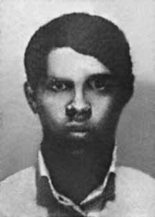

José
Bartolomeu
Rodrigues
de Souza
CIRCUNSTÂNCIAS DA MORTE
José Bartolomeu Rodrigues de Souza foi morto por agentes da repressão em 29 de dezembro de 1972 no Rio de Janeiro, no episódio conhecido como Massacre do Grajaú, ocasião em que morreram mais cinco militantes do PCBR. As circunstâncias de sua morte ainda não foram totalmente esclarecidas. Segundo a versão oficial, em nota intitulada “Destruído o grupo de Fogo Terrorista do PCBR/GB” e circulada pelo Serviço de Relações Públicas do Exército à imprensa, os militantes dos “aparelhos” de Bento Ribeiro e da Rua Grajaú teriam morrido em decorrência de tiroteio contra as forças de segurança. O Jornal do Brasil publicou a informação em 17 de janeiro de 1973 sob o título “Seis subversivos morreram em tiroteio com as autoridades”. De acordo com a reportagem, teriam sido realizadas ações simultâneas em diferentes pontos da Guanabara para desbaratar células do PCBR. No confronto, teriam morrido seis militantes, um teria conseguido fugir, apesar de ferido, e um agente da segurança também teria ficado ferido. Essas ações teriam ocorrido no dia 29 de dezembro de 1972 e não teriam sido noticiadas em virtude do sigilo necessário ao prosseguimento das operações. As ações ocorreram após a prisão de Fernando Augusto da Fonseca, no Recife. De lá Fernando Augusto (conhecido como Fernando Sandália) teria sido encaminhado ao Rio de Janeiro, e após os interrogatórios a polícia teria descoberto onde ficavam os aparelhos do PCBR na cidade, bem como as próximas operações que seriam realizadas pelos militantes. Agentes do DOI-CODI teriam se dirigido junto com Fernando Sandália ao “aparelho móvel”, que fazia ponto na rua Grajaú, enquanto outra equipe teria se dirigido ao “aparelho” de Bento Ribeiro. No “aparelho” de Bento Ribeiro, um apartamento na rua Sargento Valder Xavier de Lima, foram encontrados baleados os corpos de Lourdes Maria Wanderley Pontes e Valdir Salles Saboia. No final da rua Grajaú foram encontrados outros quatro militantes vítimas do massacre. O corpo de José Bartolomeu Rodrigues de Souza foi encontrado carbonizado dentro de um automóvel junto com os corpos de Getúlio D’Oliveira Cabral e José Silton Pinheiro. O corpo de Fernando Augusto da Fonseca foi encontrado baleado e estendido no asfalto perto do automóvel. As vítimas foram recolhidas na noite do dia 29 de dezembro de 1972 e deram entrada no IML às 2h30 do dia 30 de dezembro de 1972. Os parentes e amigos só souberam da morte das vítimas após a publicação na imprensa. Somente Valdir e Fernando Augusto foram reconhecidos e enterrados por seus familiares. Os demais foram dados como indigentes e enterrados como desconhecidos no cemitério de Ricardo Albuquerque em fevereiro de 1973. Apesar disso, já estavam identificados pelo menos desde janeiro de 1973, inclusive na nota divulgada à imprensa. Ainda na década de 1970 foram transferidos para o ossário geral do cemitério e entre os anos de 1980/1981 foram novamente enterrados numa vala clandestina do cemitério. Passados mais de 40 anos da morte de José Bartolomeu Rodrigues de Souza, alguns aspectos do Massacre do Grajaú restam inconclusos. Há estranheza no fato de que os militantes teriam sido mortos no dia 29 de dezembro de 1972 e a divulgação da morte se deu apenas no dia 17 de janeiro de 1973, de modo que resta a imprecisão quanto a data dos acontecimentos. Contudo, investigações realizadas pela Comissão Especial sobre Mortos e Desaparecidos Políticos e, mais recentemente, pela Comissão Nacional da Verdade revelaram a existência de indícios que permitem apontar a falsidade da versão de tiroteio divulgada pelos órgãos de repressão. O primeiro indício diz respeito à documentação produzida pelo DOPS e pelo IML: o registro de ocorrência de no 1.541/72 do DOPS do dia 30 de dezembro de 1973 traz que o delegado Cícero Gomes Carneiro se dirigiu às 23h50 da noite do dia 29 de dezembro à rua Grajaú, onde já estavam viaturas do corpo de bombeiros e onde encontrou “um carro incendiado e três corpos completamente carbonizados, sem possibilidade de identificação, dois revólveres inteiramente queimados no interior do veículo”. Os corpos da rua Grajaú foram removidos para o IML com as guias no 10, 11, 12 e 13. Contudo, em ofício do DOPS, sobre a investigação policial no 93/72, diz-se que a autoria do registro 1.541/72 é do comissário de polícia Gilberto da Silveira Menezes. Diz ainda que entre o material encontrado dos quatro mortos estava uma identidade de Getúlio e, portanto, “não há dúvida que um dos elementos da ação era realmente o terrorista Getúlio”. Ainda, no ofício no 8.609/73 do IML, assinado pelo diretor Nilson Sant’Ana respondendo a memorando do DOPS em 17 de julho de 1973, encaminha-se a segunda via dos autos cadavéricos correspondentes às guias no 12 e 13, do dia 29 de dezembro de 1972 e informa-se que as guias no 10 e 11 foram identificadas como Valdir Salles Saboia e Getúlio de Oliveira Cabral, respectivamente. Esses documentos mostram que desde o princípio as autoridades policiais sabiam a identidade das vítimas, além de tornar evidente uma incongruência: Valdir Salles portava equivocadamente a guia no 10, quando deveria ter recebido a no 09. Outro importante dado diz respeito às informações contidas nas certidões de óbito das vítimas: as certidões de Getúlio D’Oliveira e José Bartolomeu apresentam, manuscrita no verso, a frase “Inimigos da Pátria (terroristas)”; todas as certidões apresentam hora de morte ignorada, exceto a de Fernando Augusto, que informa que ele morreu às 16 horas; a certidão de óbito de Valdir Salles apresenta local de morte “final da rua Grajaú, em frente ao no 321”; a certidão de Lourdes apresenta nome de Luciana Ribeiro dos Santos, codinome da militante, informação conhecida tanto dos agentes da repressão quanto dos familiares. Os laudos cadavéricos de Lourdes e Valdir descrevem rigidez muscular generalizada, o que caracteriza que as mortes teriam ocorrido havia pelo menos 12 horas. As certidões de óbito e os laudos cadavéricos das vítimas foram assinados pelo médico-legista Roberto Blanco dos Santos, conhecido por firmar laudos falsos. Os dados desencontrados sobre o horário de morte das vítimas e do local de morte de Valdir Saboia permitem inferir que se tratou de forja de informações, para encobrir o assassinato dos militantes. Além disso, os relatórios produzidos pelos ministérios das forças armadas descrevem a morte dos militantes com falta de informações ou ainda com o acréscimo de dados. O relatório da Aeronáutica indica que Lourdes é “falecida (…) pela equipe de agentes de segurança, tentando romper o cerco, inclusive empregando granadas de mão”. Em relatório do CISA sobre o PCBR de 28 de abril de 1986, há uma lista sobre as ações realizadas, dentre as quais há a descrição de assalto a banco, ocorrida em outubro de 1972, na rua Marques Abrantes, no Rio de Janeiro. As informações sobre essa ação foram levantadas a partir de declarações de Fernando Augusto da Fonseca e Valdir Salles Saboia. Essa informação parece apontar para um contato dos agentes da repressão com Valdir Salles, anterior à morte do militante, o que permite inferir que provavelmente tenha sido detido e submetido a interrogatório no final de 1972. Apesar de serem mencionados (mas não nominados) na nota divulgada em janeiro de 1973, em nenhum dos documentos oficiais analisados há mais informações sobre os militantes que teriam sido presos, ou do militante que teria fugido ferido e do agente de segurança que também teria saído ferido do tiroteio. Com a análise dos registros fotográficos dos locais dos assassinatos pode-se concluir que não houve troca de tiros entre os militantes e a polícia, uma vez que não há marcas de perfuração no Fusca onde eles foram encontrados. Ainda, pode-se inferir que o carro foi carbonizado de dentro pra fora, uma vez que o motor e o tanque de combustível do carro estavam intactos. Além disso, no apartamento onde estavam Lourdes Maria e Valdir Salles tampouco havia sinais de perfurações nas paredes, bem como vestígios das granadas que teriam sido explodidas durante o suposto confronto. Finalmente, os corpos de Lourdes Maria, Valdir Salles e Fernando Augusto apresentam sinais de tiros recentes na região torácica, sem marcas visíveis de tortura. Tanto em Lourdes quanto em Valdir é possível ver tiros nos braços, sinais de autodefesa, o que indica que os militantes foram vítimas de execução. Em declaração escrita e gravada em 31 de janeiro de 1996, firmada em cartório do 4o Ofício de Notas de Natal (RN), Rubens Manoel Lemos afirma que José Silton foi assassinado pela Ditadura Militar. De acordo com o depoente, “José Sinton Pinheiro, ao lado de Sandália e Getúlio, foram colocados já mortos dentro de um carro de marca Volkswagen, que foi incendiado (explodido), no Rio de Janeiro”. Finalmente, há o testemunho de Tereza Cristina Wanderley Corrêa de Araujo, registrado pela Secretaria de Segurança Pública de Pernambuco em 27 de janeiro de 1997 que reforça ser falsa a versão de tiroteio no aparelho de Bento Ribeiro: ela teria tomado conhecimento, em dezembro de 1972, da prisão de sua prima-irmã, Lourdes Maria. Relata ainda que o seu informante esclareceu que o estado físico de Lourdes era precário e que ela seria transferida para interrogatório no Recife. Cabe ainda acrescentar que José Bartolomeu Rodrigues de Souza havia sido condenado pelo Conselho de Justiça da Aeronáutica em 30 de maio de 1972 a prisão perpétua e ainda a pena acessória de 10 anos de suspensão dos direitos políticos. No Ofício no 194 de 7 de junho de 1972, da Delegacia de Segurança Social de Pernambuco, encontra-se o encaminhamento do mandado de prisão de José Bartolomeu expedido pela Auditoria da 7ª CJM. Diante da ausência de identificação dos seus restos mortais, entende-se que José Bartolomeu Souza Lima permanece desaparecido.
José Bartolomeu Rodrigues de Souza was killed by agents of repression on December 29, 1972 in Rio de Janeiro, in the episode known as the Grajaú Massacre, when five more PCBR militants died. The circumstances of his death have not yet been fully clarified. According to the official version, in a note titled “The PCBR/GB Terrorist Fire Group Destroyed” and circulated by the Army Public Relations Service to the press, the militants from the “apparatus” of Bento Ribeiro and Rua Grajaú died as a result of gunfire against the security forces. Jornal do Brasil published the information on January 17, 1973 under the title “Six subversives died in a shootout with the authorities”. According to the report, simultaneous actions were carried out in different parts of Guanabara to dismantle PCBR cells. In the confrontation, six militants were killed, one managed to escape, despite being injured, and a security agent was also injured. These actions would have taken place on December 29, 1972 and would not have been reported due to the secrecy necessary for the continuation of operations. The actions took place after the arrest of Fernando Augusto da Fonseca, in Recife. From there Fernando Augusto (known as Fernando Sandália) would have been taken to Rio de Janeiro, and after interrogations the police would have discovered where the PCBR devices were located in the city, as well as the next operations that would be carried out by the militants. DOI-CODI agents would have gone together with Fernando Sandália to the “mobile device”, which was located on Grajaú Street, while another team would have gone to Bento Ribeiro's “device”. In Bento Ribeiro's “apparatus”, an apartment on Rua Sargento Valder Xavier de Lima, the bodies of Lourdes Maria Wanderley Pontes and Valdir Salles Saboia were found shot. At the end of Grajaú Street, four other militants who were victims of the massacre were found. The body of José Bartolomeu Rodrigues de Souza was found charred inside a car along with the bodies of Getúlio D’Oliveira Cabral and José Silton Pinheiro. The body of Fernando Augusto da Fonseca was found shot and lying on the asphalt near the car. The victims were collected on the night of December 29, 1972 and were admitted to the IML at 2:30 am on December 30, 1972. Relatives and friends only found out about the victims' deaths after it was published in the press. Only Valdir and Fernando Augusto were recognized and buried by their families. The rest were considered destitute and buried as unknown in the Ricardo Albuquerque cemetery in February 1973. Despite this, they had already been identified since at least January 1973, including in the note released to the press. Still in the 1970s, they were transferred to the cemetery's general ossuary and between 1980/1981 they were reburied in a clandestine grave in the cemetery. More than 40 years after the death of José Bartolomeu Rodrigues de Souza, some aspects of the Grajaú Massacre remain inconclusive. There is strangeness in the fact that the militants would have been killed on December 29, 1972 and the death was only announced on January 17, 1973, so that there remains inaccuracy regarding the date of the events. However, investigations carried out by the Special Commission on Political Deaths and Disappearances and, more recently, by the National Truth Commission revealed the existence of evidence that makes it possible to point out the falsehood of the version of the shooting published by the repression bodies. The first indication concerns the documentation produced by DOPS and IML: the incident report number 1,541/72 of the DOPS on December 30, 1973 states that police chief Cícero Gomes Carneiro went at 11:50 pm on the night of December 29 to Grajaú Street, where fire department vehicles were already there and where he found “a car on fire and three completely charred bodies, with no possibility of identification, two completely burned revolvers inside the vehicle”. The bodies from Rua Grajaú were removed to the IML with records no. 10, 11, 12 and 13. However, in a letter from the DOPS, regarding the police investigation no. 93/72, it is said that the authorship of record 1.541/72 was the police commissioner Gilberto da Silveira Menezes. He also says that among the material found from the four dead was an identity of Getúlio and, therefore, “there is no doubt that one of the elements of the action was actually the terrorist Getúlio”. Furthermore, in IML letter no. 8.609/73, signed by director Nilson Sant’Ana responding to a DOPS memorandum on July 17, 1973, the second copy of the cadaver records corresponding to guides no. Getúlio de Oliveira Cabral, respectively. These documents show that from the beginning the police authorities knew the identity of the victims, in addition to making an incongruity evident: Valdir Salles mistakenly carried guide number 10, when he should have received guide number 09. Another important fact concerns the information contained in the victims' death certificates: the certificates of Getúlio D’Oliveira and José Bartolomeu present, handwritten on the back, the phrase “Enemies of the Fatherland (terrorists)”; all certificates have an unknown time of death, except that of Fernando Augusto, who states that he died at 4 pm; Valdir Salles’ death certificate shows place of death “at the end of Rua Grajaú, in front of number 321”; Lourdes' certificate shows the name of Luciana Ribeiro dos Santos, the militant's code name, information known to both repression agents and family members. The cadaveric reports of Lourdes and Valdir describe generalized muscular rigidity, which indicates that the deaths would have occurred at least 12 hours ago. The victims' death certificates and cadaveric reports were signed by coroner Roberto Blanco dos Santos, known for signing false reports. The conflicting data on the victims' time of death and the place of Valdir Saboia's death allow us to infer that information was forged to cover up the murder of the militants. Furthermore, the reports produced by the ministries of the armed forces describe the deaths of militants with a lack of information or even with the addition of data. The Air Force report indicates that Lourdes was “killed (…) by the team of security agents, trying to break the siege, including using hand grenades”. In a CISA report on the PCBR dated April 28, 1986, there is a list of the actions carried out, among which there is a description of a bank robbery, which occurred in October 1972, on Rua Marques Abrantes, in Rio de Janeiro. Information about this action was gathered from statements by Fernando Augusto da Fonseca and Valdir Salles Saboia. This information seems to point to contact between the repression agents and Valdir Salles, prior to the militant's death, which allows us to infer that he was probably detained and subjected to interrogation at the end of 1972. Despite being mentioned (but not named) in the note released in January 1973, none of the official documents analyzed contain any more information about the militants who were arrested, or the militant who escaped injured and the security agent who was also injured in the shooting. By analyzing the photographic records of the murder sites, it can be concluded that there was no exchange of fire between the militants and the police, since there are no puncture marks on the Beetle where they were found. Furthermore, it can be inferred that the car was charred from the inside out, since the car's engine and fuel tank were intact. Furthermore, in the apartment where Lourdes Maria and Valdir Salles were, there were no signs of holes in the walls, nor were there traces of the grenades that had been exploded during the supposed confrontation. Finally, the bodies of Lourdes Maria, Valdir Salles and Fernando Augusto show signs of recent gunshots in the chest area, without visible marks of torture. Both in Lourdes and Valdir it is possible to see gunshots in the arms, signs of self-defense, which indicates that the militants were victims of execution. In a written and recorded statement on January 31, 1996, signed at the notary's office of the 4th Office of Notas de Natal (RN), Rubens Manoel Lemos states that José Silton was murdered by the Military Dictatorship. According to the deponent, “José Sinton Pinheiro, alongside Sandália and Getúlio, were placed dead inside a Volkswagen car, which was set on fire (exploded), in Rio de Janeiro”. Finally, there is the testimony of Tereza Cristina Wanderley Corrêa de Araujo, recorded by the Public Security Secretariat of Pernambuco on January 27, 1997, which reinforces the falsehood of the version of the shooting at Bento Ribeiro's device: she would have learned, in December 1972, of the arrest of her first cousin, Lourdes Maria. He also reports that his informant clarified that Lourdes' physical condition was precarious and that she would be transferred for interrogation in Recife. It is also worth adding that José Bartolomeu Rodrigues de Souza had been sentenced by the Air Force Justice Council on May 30, 1972, to life imprisonment and an additional sentence of 10 years of suspension of political rights. In Official Letter No. 194 of June 7, 1972, from the Social Security Office of Pernambuco, there is a forwarding of the arrest warrant for José Bartolomeu issued by the Audit Office of the 7th CJM. Given the lack of identification of his remains, it is understood that José Bartolomeu Souza Lima remains missing.
José Bartolomeu Rodrigues de Souza fue asesinado por agentes de la represión el 29 de diciembre de 1972 en Río de Janeiro, en el episodio conocido como Masacre de Grajaú, cuando murieron cinco militantes más del PCBR. Las circunstancias de su muerte aún no han sido completamente aclaradas. Según la versión oficial, en una nota titulada “Destruido el grupo de fuego terrorista PCBR/GB” y distribuida por el Servicio de Relaciones Públicas del Ejército a la prensa, los militantes del “aparato” de Bento Ribeiro y Rua Grajaú murieron como resultado de disparos contra las fuerzas de seguridad. El Jornal do Brasil publicó la información el 17 de enero de 1973 bajo el título “Seis subversivos murieron en tiroteo con las autoridades”. Según el informe, se realizaron acciones simultáneas en diferentes puntos de Guanabara para desmantelar células de PCBR. En el enfrentamiento murieron seis militantes, uno logró escapar, pese a resultar herido, y un agente de seguridad también resultó herido. Estas acciones habrían tenido lugar el 29 de diciembre de 1972 y no habrían sido reportadas debido al secreto necesario para la continuación de las operaciones. Las acciones se produjeron tras la detención de Fernando Augusto da Fonseca, en Recife. De allí Fernando Augusto (conocido como Fernando Sandália) habría sido llevado a Río de Janeiro, y luego de interrogatorios la policía habría descubierto dónde se encontraban los dispositivos PCBR en la ciudad, así como los próximos operativos que realizarían los militantes. Agentes del DOI-CODI habrían acudido junto a Fernando Sandália al “dispositivo móvil”, que se encontraba en la calle Grajaú, mientras que otro equipo habría acudido al “dispositivo” de Bento Ribeiro. En el “aparato” de Bento Ribeiro, un apartamento de la calle Sargento Valder Xavier de Lima, fueron encontrados baleados los cuerpos de Lourdes Maria Wanderley Pontes y Valdir Salles Saboia. Al final de la calle Grajaú fueron encontrados otros cuatro militantes que fueron víctimas de la masacre. El cuerpo de José Bartolomeu Rodrigues de Souza fue encontrado carbonizado dentro de un automóvil junto con los cuerpos de Getúlio D’Oliveira Cabral y José Silton Pinheiro. El cuerpo de Fernando Augusto da Fonseca fue encontrado baleado y tirado en el asfalto cerca del auto. Las víctimas fueron recogidas la noche del 29 de diciembre de 1972 y admitidas en el IML a las 2:30 horas del 30 de diciembre de 1972. Familiares y amigos sólo se enteraron de la muerte de las víctimas después de su publicación en la prensa. Sólo Valdir y Fernando Augusto fueron reconocidos y enterrados por sus familias. El resto fueron considerados indigentes y enterrados como desconocidos en el cementerio Ricardo Albuquerque en febrero de 1973. Pese a ello, ya habían sido identificados al menos desde enero de 1973, incluso en la nota entregada a la prensa. Aún en la década de 1970 fueron trasladados al osario general del cementerio y entre 1980/1981 fueron reenterrados en una fosa clandestina del cementerio. Más de 40 años después de la muerte de José Bartolomeu Rodrigues de Souza, algunos aspectos de la Masacre de Grajaú siguen sin ser concluyentes. Es extraño que los militantes hubieran sido asesinados el 29 de diciembre de 1972 y que la muerte no fuera anunciada hasta el 17 de enero de 1973, por lo que sigue habiendo inexactitud en cuanto a la fecha de los hechos. Sin embargo, investigaciones realizadas por la Comisión Especial sobre Muertes y Desapariciones Políticas y, más recientemente, por la Comisión Nacional de la Verdad revelaron la existencia de pruebas que permiten señalar la falsedad de la versión del tiroteo publicada por los órganos de represión. La primera indicación se refiere a la documentación elaborada por DOPS e IML: El informe de incidente número 1.541/72 del DOPS del 30 de diciembre de 1973 refiere que el jefe de policía Cícero Gomes Carneiro se dirigió a las 23.50 horas de la noche del 29 de diciembre a la calle Grajaú, donde ya se encontraban vehículos de los bomberos y donde encontró “un auto en llamas y tres cadáveres completamente calcinados, sin posibilidad de identificación, dos revólveres completamente quemados en el interior del vehículo”. Los cadáveres de Rua Grajaú fueron trasladados al IML con expedientes nro. 10, 11, 12 y 13. Sin embargo, en carta del DOPS, respecto de la investigación policial núm. 93/72, se dice que la autoría del expediente 1.541/72 fue el comisario de policía Gilberto da Silveira Menezes. También dice que entre el material encontrado de los cuatro muertos estaba la identidad de Getúlio y, por lo tanto, “no hay duda de que uno de los elementos de la acción fue en realidad el terrorista Getúlio”. Además, en la carta IML núm. 8.609/73, firmada por el director Nilson Sant’Ana en respuesta a un memorando del DOPS el 17 de julio de 1973, la segunda copia de las actas cadavéricas correspondientes a las guías nro. Getúlio de Oliveira Cabral, respectivamente. Estos documentos demuestran que desde el principio las autoridades policiales conocían la identidad de las víctimas, además de evidenciar una incongruencia: Valdir Salles portaba por error la guía número 10, cuando debería haber recibido la guía número 09. Otro hecho importante se refiere a la información contenida en los certificados de defunción de las víctimas: los certificados de Getúlio D’Oliveira y José Bartolomeu presentan, manuscrita al dorso, la frase “Enemigos de la Patria (terroristas)”; en todas las actas se desconoce la hora de defunción, excepto la de Fernando Augusto, quien afirma que falleció a las 4 de la tarde; El certificado de defunción de Valdir Salles indica el lugar del fallecimiento “al final de la Rua Grajaú, frente al número 321”; En el certificado de Lourdes figura el nombre de Luciana Ribeiro dos Santos, nombre en clave del militante, información conocida tanto por los agentes de represión como por sus familiares. Los informes cadavéricos de Lourdes y Valdir describen rigidez muscular generalizada, lo que indica que las muertes habrían ocurrido hace al menos 12 horas. Los certificados de defunción y los informes cadavéricos de las víctimas fueron firmados por el médico forense Roberto Blanco dos Santos, conocido por firmar informes falsos. Los datos contradictorios sobre la hora de la muerte de las víctimas y el lugar de la muerte de Valdir Saboia permiten inferir que la información fue falsificada para encubrir el asesinato de los militantes. Además, los informes elaborados por los ministerios de las fuerzas armadas describen las muertes de militantes con falta de información o incluso con adición de datos. El informe de la Fuerza Aérea indica que Lourdes fue “asesinada (…) por el equipo de agentes de seguridad, intentando romper el asedio, incluso utilizando granadas de mano”. En un informe del CISA sobre la PCBR del 28 de abril de 1986, se enumeran las acciones realizadas, entre las cuales se describe un atraco a un banco, ocurrido en octubre de 1972, en la Rua Marques Abrantes, en Río de Janeiro. La información sobre esta acción se obtuvo de declaraciones de Fernando Augusto da Fonseca y Valdir Salles Saboia. Esta información parece apuntar a un contacto entre los agentes de represión y Valdir Salles, previo a la muerte del militante, lo que permite inferir que probablemente fue detenido e interrogado a finales de 1972. A pesar de ser mencionado (pero no nombrado) en la nota difundida en enero de 1973, ninguno de los documentos oficiales analizados contiene más información sobre los militantes detenidos, ni sobre el militante que escapó herido y el agente de seguridad que también resultó herido en el tiroteo. Al analizar los registros fotográficos de los lugares del asesinato, se puede concluir que no hubo intercambio de disparos entre los militantes y la policía, ya que no hay marcas de pinchazos en el Beetle donde fueron encontrados. Además, se puede inferir que el auto estaba carbonizado de adentro hacia afuera, ya que el motor y el tanque de combustible del auto se encontraban intactos. Además, en el departamento donde se encontraban Lourdes María y Valdir Salles no había señales de agujeros en las paredes, ni rastros de las granadas que habían explotado durante el supuesto enfrentamiento. Finalmente, los cuerpos de Lourdes María, Valdir Salles y Fernando Augusto presentan signos de disparos recientes en la zona del tórax, sin marcas visibles de tortura. Tanto en Lourdes como en Valdir es posible observar disparos en los brazos, signos de legítima defensa, lo que indica que los militantes fueron víctimas de ejecución. En declaración escrita y grabada del 31 de enero de 1996, firmada en la notaría de la 4ª Oficina de Notas de Natal (RN), Rubens Manoel Lemos afirma que José Silton fue asesinado por la Dictadura Militar. Según el declarante, “José Sinton Pinheiro, junto con Sandália y Getúlio, fueron colocados muertos dentro de un automóvil Volkswagen, que fue incendiado (explotado), en Río de Janeiro”. Finalmente, está el testimonio de Tereza Cristina Wanderley Corrêa de Araujo, registrado por la Secretaría de Seguridad Pública de Pernambuco el 27 de enero de 1997, que refuerza la falsedad de la versión del tiroteo contra el dispositivo de Bento Ribeiro: se habría enterado, en diciembre de 1972, de la detención de su prima hermana, Lourdes Maria. También relata que su informante aclaró que el estado físico de Lourdes era precario y que sería trasladada para ser interrogada en Recife. Cabe agregar también que José Bartolomeu Rodrigues de Souza había sido condenado por el Consejo de Justicia de la Fuerza Aérea el 30 de mayo de 1972 a cadena perpetua y una pena adicional de 10 años de suspensión de derechos políticos. En Oficio No. 194 de 7 de junio de 1972, de la Caja de Seguridad Social de Pernambuco, consta remisión de orden de aprehensión contra José Bartolomeu emitida por la Auditoría del 7º CJM. Ante la falta de identificación de sus restos, se entiende que José Bartolomeu Souza Lima continúa desaparecido.